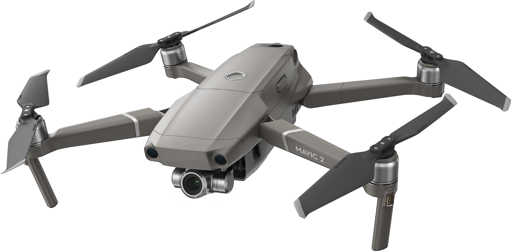
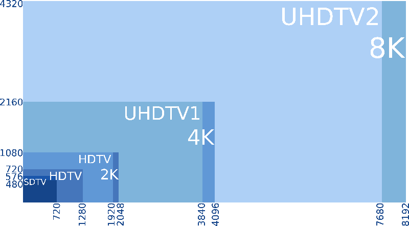
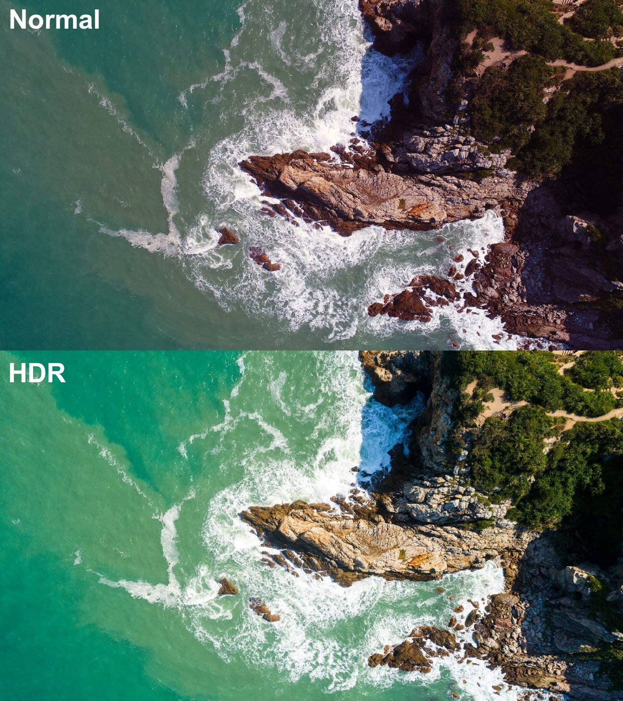
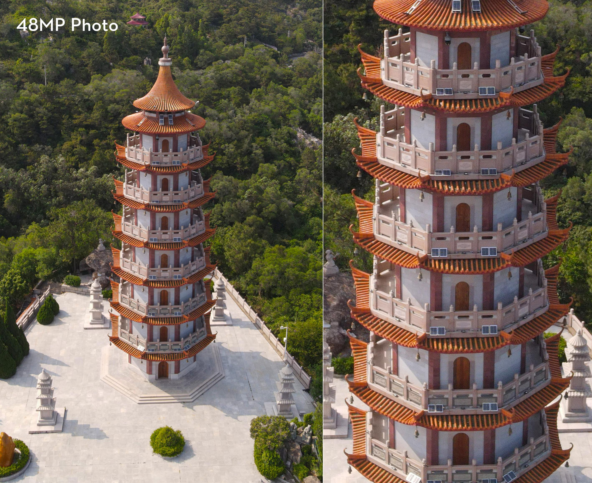

Mavic Air 2 takes power and portability to the next level, offering advanced features in a compact form factor. Intelligent shooting functions and excellent image quality put aerial masterpieces within reach. Safer, smarter flight enables you to up your game while fully enjoying the creative process.
Master creative aerial shots thanks to effortlessly smooth 4K/60fps video. The D-Cinelike flat color profile retains more information for post-processing. The HEVC (H.265) video codec records more image information, uses less storage, and preserves the dynamic range and detail of your footage, ensuring next-level content.
The secret to incredible HDR video is a high-performance Quad Bayer image sensor. A single frame separates exposure levels in different areas, accurately capturing light and dark details. The images are layered to create a colorful, balanced, and eye-catching picture with higher dynamic range.
With a 1/2-inch CMOS sensor, Mavic Air 2 captures impressive 48MP photos. Get ready to take your aerial content to the next level.
Note: 1. Photos taken in SmartPhoto mode have a resolution of 12 MP. 2. 8K resolution can only be used in Free and Waypoint modes. 3. Unobstructed, free of interference, and when FCC-compliant. Maximum flight range specification is a proxy for radio link strength and resilience. Always follow local rules and regulations and fly your drone within your visual line of sight unless otherwise permitted. 4. Due to local policies, some countries do not support 5.8 GHz transmission. 5. Flight time acquired at an angle of 9° at a speed of 5.1 m/s, free of wind. 6. APAS 3.0 and FocusTrack are not available while recording in 4K at 60, 50, and 48 fps, 2.7K at 60, 50, and 48 fps, and 1080p at 120 and 240 fps. 7. Battery life was measured with an Android phone in an interference-free environment. 8. ND16/64/256 filters are included in the Fly More Combo. The ND4/8/32 filter set can be purchased separately. All relevant laws and regulations were observed when shooting the photo and video content displayed on this website.